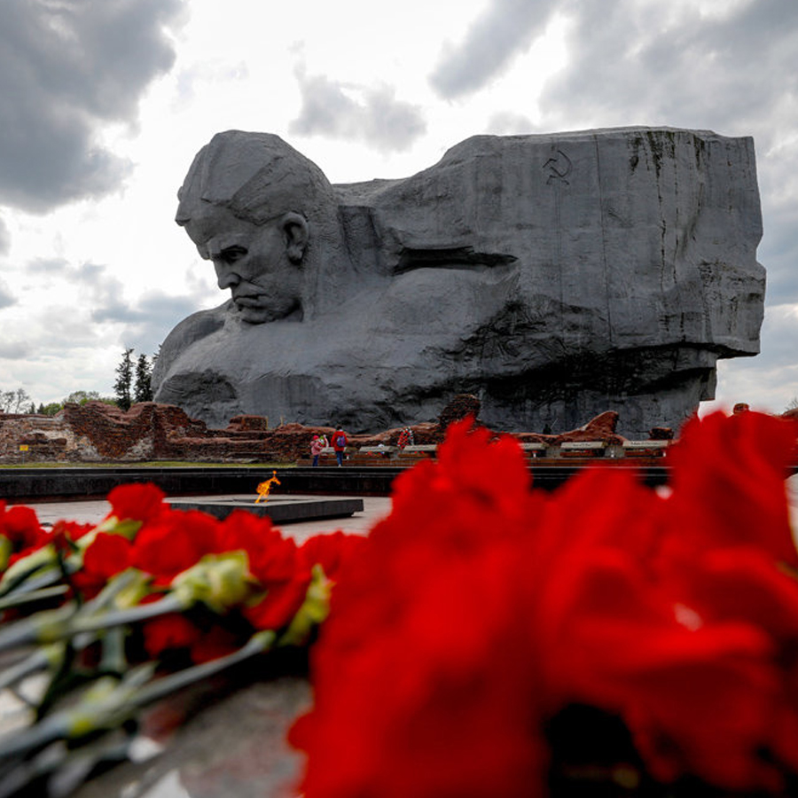
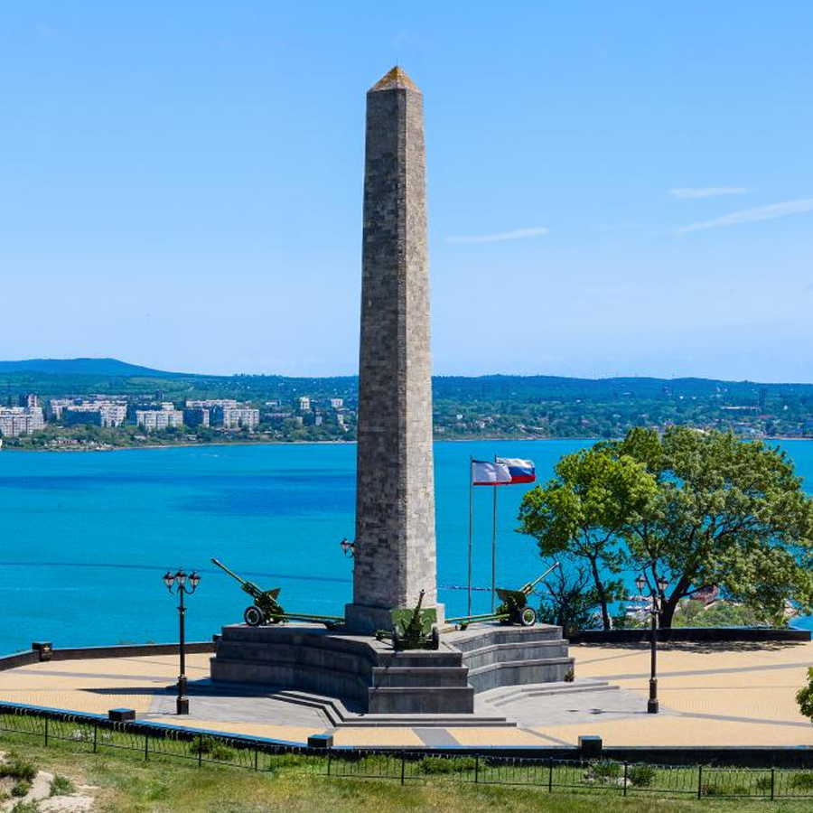
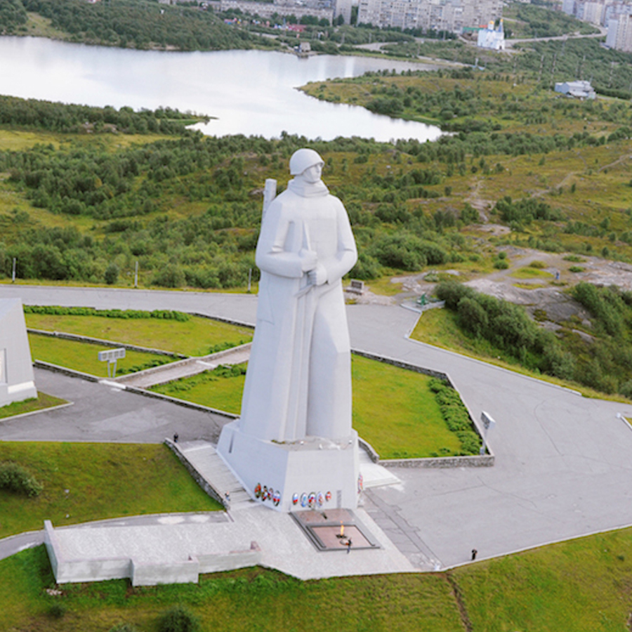
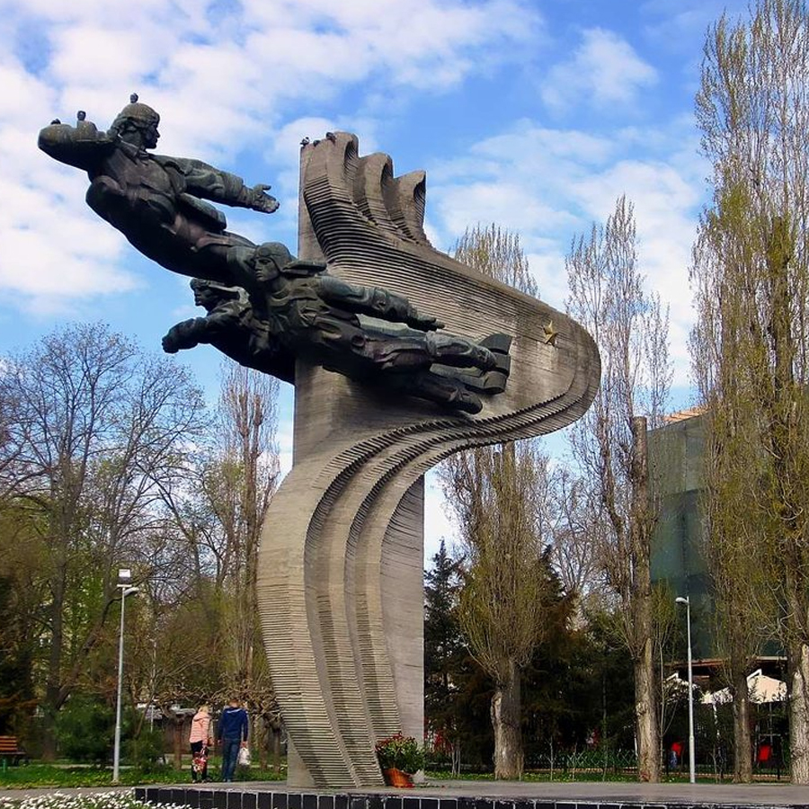
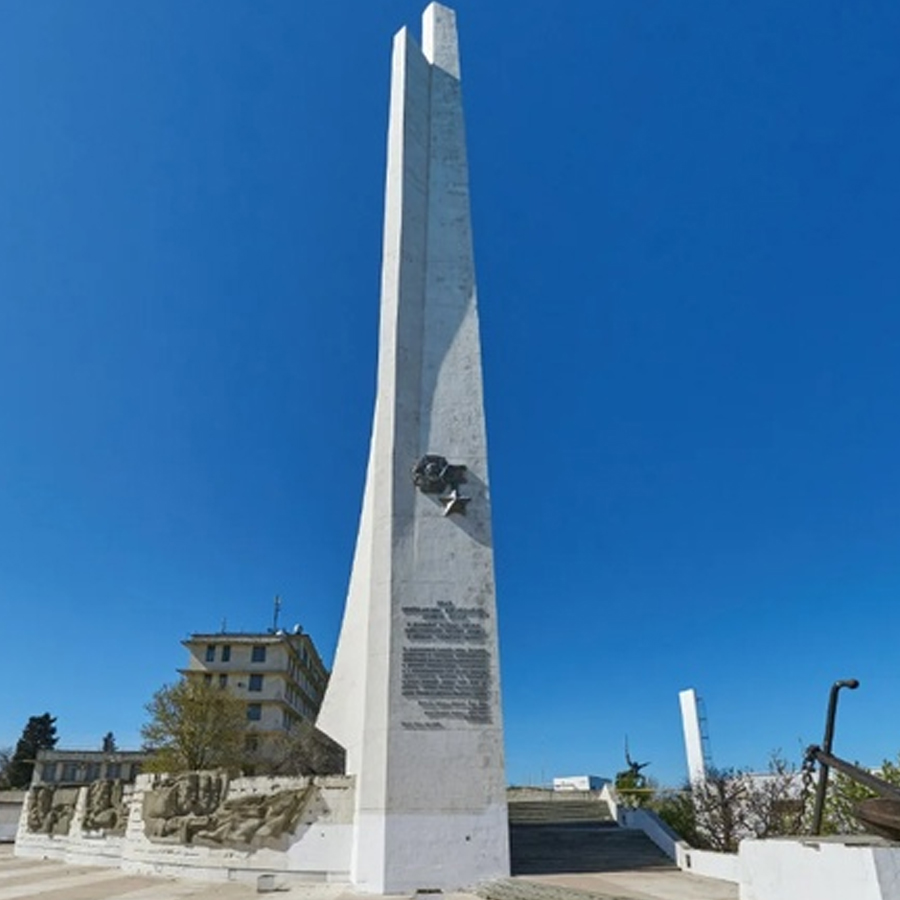
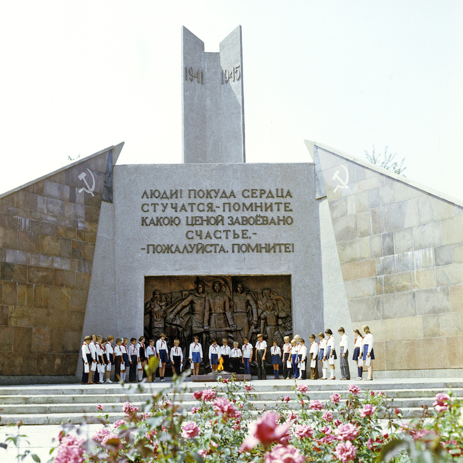
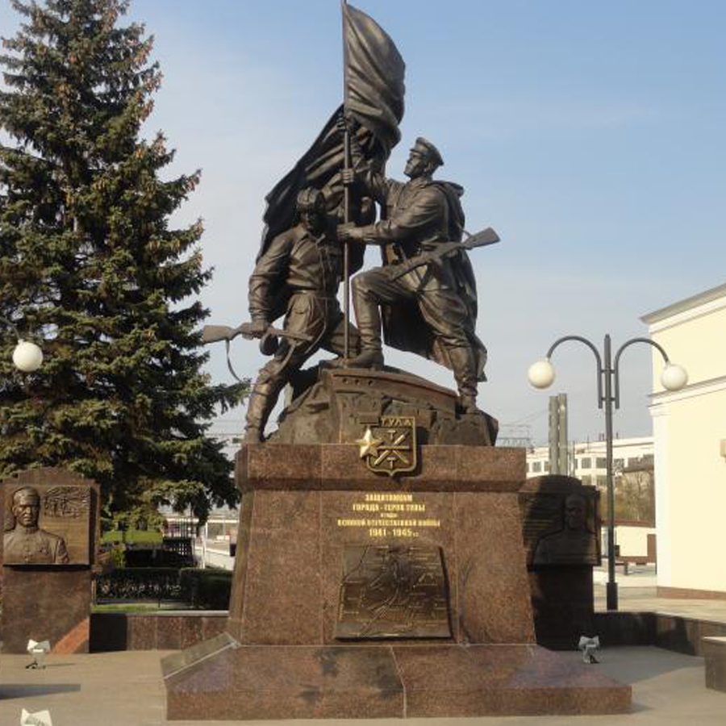

Города-герои
Города, удостоенные высшей степени отличия за массовый героизм и мужество защитников

Брестская крепость
Из всех городов Советского Союза именно Бресту выпала участь принять первый бой с немецкими захватчиками. Ранним утром 22 июня 1941 года вражеской бомбардировке подверглась Брестская крепость.
Узнать больше
Керчь
Керчь была одним из первых городов, попавших под удар немецко-фашистских войск в начале войны. За всё время войны через город четырежды проходила линия фронта и он дважды был оккупирован вражескими войсками.
Узнать больше
Киев
Внезапный удар с воздуха по Киеву немецкие войска нанесли 22 июня 1941 года — в самые первые часы войны. Героическая борьба за Киев продолжалась 72 дня.
Узнать больше
Ленинград
Ленинград был особым городом для СССР, поэтому в планах гитлеровского командования было полное уничтожение города и истребление его населения. Ожесточённые бои на подступах к Ленинграду начались 10 июля 1941 года.
Узнать больше
Минск
Минск с первых дней Великой Отечественной войны оказался в самом центре сражений. Передовые части гитлеровской армии подошли к городу 26 июня 1941 года.
Узнать больше
Москва
В агрессивных планах фашистской Германии захват Москвы имел первостепенное значение. Для захвата города был разработан план наступательной операции под кодовым названием «Тайфун».
Узнать больше
Мурманск
Военная история Мурманска началась с наступления в 1941 году немецко-фашистской армии. Для захвата земель Советского Заполярья со стороны Норвегии и Финляндии был развернут фронт «Норвегия».
Узнать больше
Новороссийск
После того как советские войска сорвали немецкий план проведения наступательных операций на кавказском направлении, гитлеровское командование начало атаки на Новороссийск.
Узнать больше
Одесса
В августе 1941 года Одесса была окружена немецкими войсками. Оборона Одессы длилась 73 дня силами армии и народного ополчения.
Узнать больше
Севастополь
К началу Великой Отечественной войны город Севастополь был крупнейшим советским портом на Чёрном море. Героическая защита города продолжалась 250 дней.
Узнать больше
Смоленск
С началом Великой Отечественной войны Смоленск оказался на пути главного удара фашистских войск, двигающихся на Москву. Первой бомбардировке город подвергся 24 июня 1941 года.
Узнать больше
Сталинград
Волгоград (Сталинград) — один из самых известных и значимых городов, носящих звание города-героя. Летом 1941 года немецко-фашистские войска развернули массированное наступление на южном фронте.
Узнать больше
Тула
К октябрю 1941 года фашистским захватчикам, мечтавшим о захвате Москвы, удалось довольно далеко продвинуться в глубь России. Войска генерала Гудериана перед выходом к Туле взяли город Орёл.
Узнать больше